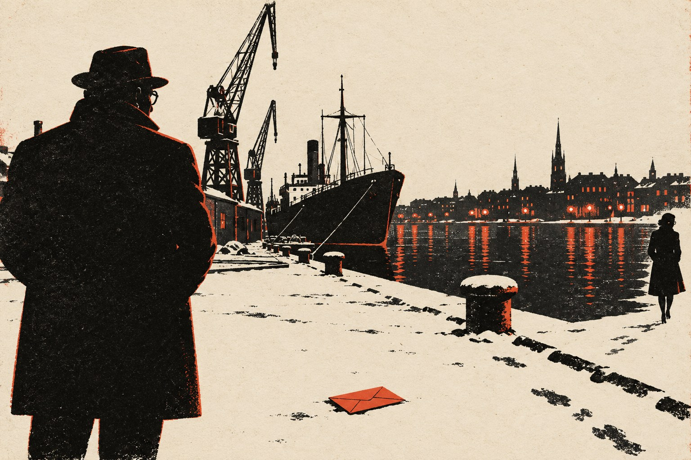

Нейтралитет

Прими свой жребий. Ни о чём не сожалей.
Твори, что должно, прежде чем велят.— Пауль Флеминг, «К себе»
Глава первая
Комиссар Эклунд писал отчёты от руки.
В управлении этого не одобряли. Там давно стояли машинки, и молодые сотрудники, пришедшие на службу после начала войны, печатали двумя пальцами быстрее, чем Эклунд писал пером. Начальник отдела не раз говорил ему, что почерк у него хороший, но что почерк, как и многое другое в Эклунде, принадлежит прошлому веку. Эклунд соглашался и продолжал писать от руки. Он считал, что машинка думает за человека: когда пальцы бегут по клавишам, мысль бежит за ними и не успевает остановиться там, где надо. А перо медленное, и пока выводишь слово, успеваешь спросить себя, правда ли оно.
Ему было под шестьдесят, и тридцать лет из них он прослужил в стокгольмской полиции, сначала в уголовной, потом, когда началась война и в стране вдруг понадобилось множество людей, умеющих наблюдать за иностранцами, в новой службе безопасности, которую в городе называли просто «службой», а в газетах не называли никак. Жена его болела третий год, и врачи уже ничего не обещали. Детей у них не было. По вечерам, приходя домой, он читал ей вслух газеты, а когда она засыпала, садился за кухонный стол и писал отчёты, потому что днём на это не хватало времени, а ночью он всё равно плохо спал.
Отчёт, который он писал в ночь на двадцать третье ноября тысяча девятьсот сорок второго года, был двадцать первым по одному и тому же делу, и Эклунд впервые не знал, чем его закончить.
⁂
Дело было заведено в мае на швейцарского подданного, представителя оружейной фирмы из Цюриха, который с тридцать девятого года подолгу жил в Швеции и ездил отсюда в Германию и в Швейцарию. В Стокгольме он снимал две комнаты в пансионе на Страндвеген, у вдовы морского офицера. В Гётеборге останавливался в одной и той же гостинице у вокзала. Звали его Смайли, и это имя с самого начала показалось Эклунду неправдоподобным для швейцарца. Паспорт, однако, был в полном порядке, и фирма в Цюрихе на запрос ответила любезно и коротко: да, господин Смайли их представитель, и они им довольны.
Таких коммерсантов в Стокгольме в те годы были сотни. В нейтральном городе между воюющими странами, в ресторанах, гостиницах и конторах, торговали всем: железной рудой и подшипниками, лесом и бумагой, сведениями и людьми. Немцы покупали больше всех и платили лучше всех, англичане покупали меньше, но настойчивее, американцы только начинали и путались. Служба смотрела за всеми, по возможности, и почти никого не трогала. Так было велено сверху. Швеции нужно было остаться в стороне от войны, и для этого все стороны должны были считать её полезной и безвредной.
За полгода Эклунд узнал о господине Смайли довольно много и ничего существенного. Он знал, что господин Смайли встаёт рано, пьёт по утрам чай, читает три газеты, шведскую, немецкую и швейцарскую, и подолгу гуляет вдоль воды. Что он носит дорогую одежду, которая плохо на нём сидит. Что он близорук, вежлив, застенчив и, по словам вдовы морского офицера, никогда не приводит в пансион женщин, хотя в остальном человек, по-видимому, вполне нормальный. Что в Гётеборге он бывает чаще, чем требуют дела его фирмы. Что у него есть знакомые в порту, в конторах, в немецкой колонии и среди эмигрантов, но ни с кем из них он не встречается настолько часто, чтобы это можно было назвать связью. И что он, по-видимому, знает, что за ним смотрят.
Это последнее Эклунд долго не хотел записывать, потому что доказательств не было. Господин Смайли ни разу не оглянулся, не проверился у витрины, не прыгнул в последнюю минуту в трамвай. Он вообще ничего не делал так, как делали люди, которых Эклунд ловил прежде. Но в сентябре, в Гётеборге, произошла одна вещь, которую Эклунд не мог объяснить иначе.
Он вёл господина Смайли сам, потому что двое его людей заболели, а третий был занят на немецком пароходе. Господин Смайли вышел из гостиницы, дошёл до книжной лавки на Кунгсгатан, провёл в ней сорок минут, вышел с пакетом и пошёл обратно. Эклунд стоял на другой стороне улицы, у табачного киоска, и делал вид, что выбирает сигары. Когда господин Смайли поравнялся с киоском, он остановился, перешёл улицу, подошёл к Эклунду, приподнял шляпу и сказал на хорошем, медленном, чуть книжном шведском, что, кажется, господин уронил перчатку.
Эклунд посмотрел вниз. Перчатка действительно лежала на мостовой, его собственная, выпавшая из кармана пальто. Он поблагодарил и поднял её. Господин Смайли ещё раз приподнял шляпу, сказал, что в такую погоду без перчаток легко простудиться, и пошёл дальше.
Эклунд стоял у киоска, держа перчатку в руке, и чувствовал, что краснеет, как гимназист.
⁂
Начальство велело не трогать. Начальство всегда велело не трогать англичан, если они не делали чего-нибудь совсем уже явного, потому что с англичанами Швеция торговала, с англичанами ей предстояло жить после войны, когда бы и как бы та ни кончилась, и потому что, как сказал однажды начальник отдела за рюмкой, человек, который ведёт себя прилично, может работать на кого угодно, лишь бы не на русских.
Эклунд не спорил и смотрел, как смотрел тридцать лет, не видя причин что-то менять.
В ночь на двадцать третье ноября, сидя за кухонным столом под лампой с зелёным абажуром, слыша, как в соседней комнате неровно дышит во сне жена, Эклунд закончил двадцать первый отчёт по делу швейцарского подданного Смайли тем, чем никогда не заканчивал отчётов прежде. Он написал, что за полгода наблюдения так и не установил, на чью разведку работает объект, британскую или какую-либо иную, и работает ли вообще. Что объект, по его мнению, человек умный, осторожный и, вероятно, опасный. И что, если ему, Эклунду, будет позволено высказать личное мнение, этот человек ему, пожалуй, симпатичен, хотя он не может объяснить почему.
Перечитав последнюю фразу, он подумал, не вычеркнуть ли её. Потом решил, что пером писал её медленно и успел спросить себя, правда ли это. Это была правда.
Он оставил фразу как есть, промокнул лист, сложил отчёт вчетверо и лёг спать. Утром, по дороге в управление, он заметил, что идёт по Страндвеген, хотя это был не самый короткий путь. Окна пансиона вдовы морского офицера были темны. Господин Смайли третьего дня уехал в Гётеборг.
Глава вторая
Весной, в начале апреля, Нильс Окерлунд сидел в портовом кафе в Гётеборге, смотрел на серую воду за окном и плакал, не стесняясь, как плачут люди, которые слишком устали, чтобы следить за собой.
Смайли сидел напротив и молчал. Он знал, отчего плачет Окерлунд, и знал, что утешать его бесполезно.
Неделю назад, в последний день марта, из гётеборгского порта на прорыв в Англию вышли десять норвежских судов. Они стояли здесь с апреля сорокового года, с тех пор как немцы заняли Норвегию, запертые в шведских водах, и всё это время англичане спорили со шведами и с норвежцами о том, кому они принадлежат и можно ли их выпустить. Наконец выпустили. Суда были нагружены тем, чего Англии не хватало больше всего и что Швеция продавала Германии вагонами: шарикоподшипниками, станками, специальной сталью. Окерлунд знал о грузе больше, чем полагалось конторщику экспедиционного отдела, потому что часть подшипников прошла через его руки и его накладные. Он месяц не спал, считая дни до выхода, и тайком от дочери ходил в церковь, хотя не бывал там с похорон жены.
До Англии дошли два судна из десяти. Остальные перехватили немецкие корабли, которые ждали их у самой границы шведских вод, словно знали точное время выхода. Часть экипажей затопила свои суда сама, чтобы те не достались немцам, часть попала в плен. Окерлунд узнавал об этом по кускам, из газет, из разговоров в порту, из списков, которые никто не показывал официально, и с каждым новым куском становился всё тише.
— Они знали, — сказал он наконец, вытирая лицо большим клетчатым платком. — Немцы знали, когда они выйдут. Это кто-то здесь. Кто-то из наших.
— Может быть, — сказал Смайли. — А может быть, просто ждали. Они ждали несколько месяцев. Рано или поздно суда должны были выйти.
— Вы так думаете?
Смайли так не думал. Но он сказал, что думает, потому что Окерлунду нужно было это услышать, а ему самому нужно было, чтобы Окерлунд и дальше носил накладные.
⁂
Они познакомились полтора года назад, при обстоятельствах, которые сам Окерлунд потом вспоминал как чудо, а Смайли как удачу, подготовленную довольно тщательно. Окерлунд был вдовцом, растил дочь-подростка, жил в двух комнатах в Майорне, старом рабочем районе у реки, и был должен всем: лавочнику, домохозяину, ростовщику, к которому его загнала болезнь жены. Зарабатывал он немного, а тратил, как все честные бедные люди, не на себя. Немцев он ненавидел тихо и упорно, как ненавидят то, что видят каждый день и ничего не могут с этим сделать: через его отдел шли бумаги на грузы для Германии, и каждый ящик подшипников, уходивший в Любек или Штеттин, казался ему ящиком патронов.
Смайли, швейцарскому коммерсанту, который случайно оказался рядом в очереди в сберегательной кассе и случайно разговорился, понадобилось три месяца, чтобы Окерлунд сам, без единого прямого вопроса, рассказал ему всё, что знал о немецких заказах. Ещё три месяца, чтобы Окерлунд согласился записывать номера партий и даты отправки. Смайли платил ему немного, ровно столько, чтобы погасить ростовщика за год, и ни разу не назвал страну, для которой это делается. Окерлунд не спрашивал. Он решил, что это англичане, и решил, что англичане хорошие люди.
Из накладных Окерлунда в Лондоне знали, сколько подшипников уходит в Германию, каких размеров и когда. Что делали с этим знанием в Лондоне, Смайли представлял себе смутно. Иногда, читая в газетах о налётах на немецкие заводы, он думал, что, может быть, это тоже немного Окерлунд. Иногда думал, что, может быть, и нет.
⁂
Вечером того апрельского дня Смайли проводил Окерлунда до дома, до деревянной лестницы на второй этаж, где в окне горел свет и за занавеской мелькала голова девочки, ждущей отца к ужину. На прощание Окерлунд пожал ему руку обеими руками и сказал, что будет продолжать, обязательно будет, что бы ни случилось.
— Вы хороший человек, господин Смайли, — сказал он. — Я не знаю, кто вы такой, и не хочу знать. Но вы хороший человек.
Смайли поблагодарил и пошёл в гостиницу пешком, вдоль набережной, мимо доков, где под прожекторами грузили на шведское судно ящики, предназначенные, судя по маркировке, для Любека.
Он думал о десяти судах и о том, как точно немцы знали время их выхода. И о том, что Окерлунд прав: кто-то здесь, кто-то из своих. Он думал об этом и в поезде на следующий день, и потом, весь май, всякий раз, когда получал от Окерлунда очередной конверт, и всякий раз откладывал эту мысль, как откладывают письмо, на которое не хочется отвечать. Окерлунд не мог знать времени выхода норвежских судов. Это Смайли проверил в первую же неделю. Значит, это был не Окерлунд.
Глава третья
Ханна Вайс переводила с немецкого на шведский коносаменты, страховые полисы и деловую переписку для двух стокгольмских судоходных контор и одного гётеборгского торгового дома, и за это ей платили столько, чтобы она не умерла с голоду и не перестала надеяться.
Ей было за тридцать. В Берлине она окончила гимназию, начала учиться в университете и бросила, когда в тридцать третьем году таким, как она, стало нельзя учиться. Пять лет работала стенографисткой у адвоката, тоже еврея, пока адвокату не запретили вести дела. В сентябре тридцать восьмого она уехала по туристической визе в Копенгаген, из Копенгагена перебралась в Швецию и больше не вернулась. Родители остались в Берлине. Отец сказал, что стар для чужих стран, а мать не захотела оставлять отца. До осени сорок первого от них приходили письма через Швейцарию, короткие и бодрые. Потом перестали.
Ханна жила в Сёдермальме, в комнате с окном на портовые краны, и по вечерам ходила в кафе у воды, куда ходили моряки с немецких судов. В нейтральном порту их было много: немецкие суда забирали руду и лес, стояли по неделе в ожидании погрузки, и матросы, соскучившиеся по свету и пиву, сидели в кафе до закрытия. Ханна садилась недалеко, с книгой, и слушала. Она была некрасива, в очках, в старом пальто, и на неё не обращали внимания. Иногда кто-нибудь из моряков, помоложе и пьянее, заговаривал с ней, и она отвечала по-шведски, нарочно с акцентом, как отвечают чужим на чужом языке, и он отходил.
По-немецки она понимала всё, как понимают родной язык, с полуслова: какое судно идёт куда, что в трюмах, сколько дней стояли в Готенхафене, как немцы теперь называли польскую Гдыню, и почему, какой груз ждут в Гётеборге и когда. И ещё то, о чём моряки говорили тише: о бомбёжках в Гамбурге, о родных, которых не могли найти, о том, что рассказывают приехавшие с востока отпускники. Вечером, вернувшись домой, она записывала всё стенографией, той самой, которой когда-то записывала речи своего адвоката в суде, а раз в неделю переписывала на машинке обычными буквами, вкладывала в пачку готовых переводов и отдавала коммерсанту из Швейцарии, который платил за переводы чуть больше, чем они стоили. Стенограммы она не сжигала, хотя Смайли просил сжигать. Она складывала их в переплёт старого шведско-немецкого словаря и однажды, показав ему этот тайник, сказала, что когда-нибудь, после войны, кто-то должен будет слово в слово знать, что говорили эти люди в портовых кафе, и что машинописи для этого мало.
⁂
Смайли нашёл её сам, два года назад, в комитете помощи беженцам, куда пришёл с пожертвованием от своей фирмы. Он попросил познакомить его с кем-нибудь, кто владеет немецким и шведским и нуждается в работе. Ему назвали несколько имён, он поговорил со всеми и выбрал её, потому что она одна просила только работы и одна не стала рассказывать ему свою историю.
Он давал ей переводы полгода, настоящие, без всяких других просьб, прежде чем однажды спросил, случается ли ей бывать в порту. Она посмотрела на него через стол очень внимательно, сняла очки, протёрла их краем рукава, снова надела и сказала, что давно ждала этого вопроса и уже начала думать, что ошиблась.
— Вы ведь не швейцарец, — сказала она.
— У меня швейцарский паспорт.
— Это не одно и то же. Я родилась в Берлине, а Германия теперь считает, что у меня нет никакого гражданства.
Она сказала это спокойно, без горечи, как справку, и Смайли, который за десять с лишним лет службы видел достаточно людей, которых приходилось уговаривать, впервые встретил человека, который не позволял себя уговаривать.
Условие у неё было одно. Если что-нибудь узнается о её родителях, он скажет ей, что бы это ни было. Смайли обещал и в ту же неделю отправил запрос в Лондон, зная, что Лондон, скорее всего, не ответит.
⁂
Ответ пришёл осенью сорок второго года, через два года после запроса, через Красный Крест и еврейскую общину в Цюрихе, и состоял из одной строки. В строке говорилось, что чета Вайс из Берлин-Шарлоттенбурга в октябре сорок первого года включена в список на выселение в Лодзь и что дальнейших сведений нет.
Смайли держал эту строку при себе неделю. Потом пришёл к Ханне в Сёдермальм, в комнату с окном на краны, и сказал ей, потому что обещал. Она выслушала его сидя, не шевельнувшись, потом встала, поставила чайник на плитку и спросила, будет ли он чай.
Они пили чай молча. За окном скрипели краны, грузили немецкий пароход. Когда Смайли собрался уходить, Ханна проводила его до двери и сказала, что в четверг в порт приходит угольщик из Штеттина, и что она будет в кафе, как обычно.
Смайли спускался по лестнице и думал, что никогда ещё не видел такой силы в таком неприметном человеке и что ему очень не хочется думать о том, что случится с ней, если о её вечерах в кафе узнают люди, которые сидят в немецкой миссии на другом конце города и тоже читают три газеты по утрам.
Глава четвёртая
Паром из Треллеборга в Зассниц ходил всю войну, и всю войну на нём было холодно. На вагонной палубе стояли вагоны скорого поезда до Берлина, и пассажиры могли не выходить из купе, но Смайли всегда поднимался на палубу. Он стоял у поручня, смотрел, как редкие огни шведского берега уходят назад, а впереди не появляется ничего, потому что немецкий берег был затемнён. Разница между светом и темнотой была единственной границей, которую можно было увидеть с палубы, и Смайли считал нужным каждый раз её видеть.
В начале декабря сорок второго года, в Засснице, на паспортном контроле, к нему подошёл не тот чиновник, который обычно ставил штампы, а другой, в штатском, немолодой, с приятным лицом сельского учителя. Он листал паспорт долго, с удовольствием, как листают альбом с марками, потом вернул его и спросил, как поживает гётеборгский друг господина Смайли, тот, что так хорошо разбирается в подшипниках.
Смайли вежливо удивился и сказал, что у него в Гётеборге много деловых знакомых и ни одного друга.
— Разумеется, — сказал человек с лицом учителя. — Счастливого пути, господин Смайли. И передайте в Цюрих, что наши заказчики по-прежнему весьма ценят вашу фирму.
Он козырнул двумя пальцами и отошёл. Смайли доехал до Берлина, провёл там три дня, занимаясь делами фирмы и ничем больше, потому что чувствовал на спине взгляды так явственно, как чувствуют сквозняк, и вернулся в Швецию, не встретившись ни с кем из тех, с кем собирался.
⁂
В Стокгольме, в своей комнате на Страндвеген, он сел к окну и стал разбираться, кто что знает.
Об Окерлунде в сети знали двое: сам Смайли и его радист в британской миссии. Ханна дважды переводила для него немецкие технические таблицы из накладных, но имени того, кто их добывает, не знала. Радиста Смайли знал с тридцать девятого года и в нём не сомневался, насколько можно не сомневаться в человеке. О Ханне, в свою очередь, знали только он и радист. Окерлунд о ней не знал ничего, но знал, что у господина Смайли есть в Стокгольме переводчица, потому что однажды Смайли неосторожно сказал ему об этом, за кружкой пива, и потом долго себя за это корил.
Задача была старая, и решалась она старым способом, который Смайли не любил, потому что способ этот требовал врать тем, кому доверяешь.
На следующей неделе он поехал в Гётеборг и в портовом кафе, между делом, сказал Окерлунду, что через десять дней будет в Мальмё и встретится там в гостинице на Большой площади с одним человеком из Дании, который кое-что знает о судах. Вернувшись в Стокгольм, он попросил Ханну перевести на немецкий письмо, из которого следовало, что через двенадцать дней он встретится с тем же датчанином в Лунде, в гостинице у собора, хотя никакого датчанина не существовало. Смайли не собирался ни в Мальмё, ни в Лунд.
В назначенный день в Мальмё поехал мелкий служащий торгового атташе, скучный человек с усиками, которого в миссии было не жалко засветить, и просидел целый день в гостиничном фойе за газетой. Через два дня он просидел такой же день в Лунде. В Лунде не случилось ничего, кроме того, что студенты играли в снежки у собора. В Мальмё в фойе с утра сидели двое шведов, которые очень старались не быть похожими на полицейских, а после обеда к ним присоединился третий, и этот третий, судя по пальто и по тому, как он заказал кофе, был немцем.
⁂
Ближе к Рождеству Смайли снова ехал через Зассниц, и человек с лицом сельского учителя снова подошёл к нему на контроле.
— Жаль, что ваш датский знакомый так и не приехал в Мальмё, — сказал он добродушно. — Сейчас трудно с поездками. Все так заняты.
Смайли сказал, что да, все очень заняты, и протёр очки.
На обратном пути, на палубе, глядя, как из темноты выходят огни Треллеборга, он думал о том, что теперь знает две вещи. Первая: Окерлунд говорит с кем-то, кроме него. Вторая: люди, которые сидели в мальмёском фойе с утра, были шведами, а немец пришёл только после обеда. Значит, первыми о встрече узнали шведы и только потом, каким-то путём, немцы.
Была и третья вещь, о которой он старался не думать до самого Стокгольма. Окерлунд знал, что в Стокгольме есть переводчица.
Глава пятая
В центральных банях на Дроттнинггатан по субботам собирались пожилые мужчины, которые ходили туда полжизни, и комиссар Эклунд был одним из них. Он сидел на верхнем полке парильни, красный, с полотенцем на плечах, и думал о жене, которая утром не узнала его, когда дверь открылась и на нижний полок, неловко, как садятся люди, не привыкшие к пару, сел невысокий полный человек без очков.
Эклунд узнал его не сразу. Без очков и без плохо сидящего костюма господин Смайли оказался совсем другим человеком, моложе, чем казался на улице, и беззащитнее. Он щурился от пара, вытирал лоб и делал вид, что не замечает никого вокруг. Когда двое стариков со среднего полка ушли в бассейн и в парильне стало пусто, он сказал, не поднимая головы, что здесь, кажется, единственное место в Стокгольме, где ни у кого нет карманов.
Эклунд помолчал. Потом сказал, что да, пожалуй, и что именно поэтому сюда и ходит тридцать лет.
⁂
О деле они не говорили. Смайли не спрашивал, а Эклунд не собирался отвечать, и оба поняли это с первых слов. Они говорили о погоде, о ценах на дрова, о том, что зима в этом году мягче прошлогодней и что лёд на заливе так и не стал. Смайли спросил о жене комиссара, и Эклунд, к собственному удивлению, вдруг стал рассказывать, спокойно и подробно, как не рассказывал никому, о врачах, о том, что она иногда его не узнаёт, и о том, что в эти минуты он почему-то чувствует не горе, а стыд, словно подсматривает за чужой жизнью. Смайли слушал, и Эклунд видел, что он слушает по-настоящему, а слушать так умеют немногие.
Уже в раздевалке, застёгивая рубашку, Эклунд сказал, ни к кому не обращаясь, что в Гётеборге прошлой весной случилась забавная история, о которой гётеборгские коллеги рассказали в Стокгольме только осенью. Один ростовщик из Майорна, человек нечистый, но осторожный, вдруг сам пришёл в полицию и рассказал, что один из его должников, человек бедный, вдруг расплатился за год вперёд иностранными деньгами. Ростовщик хотел знать, нет ли тут чего незаконного, не пострадает ли он сам. Его успокоили, а с должником поговорили. Должник, человек слабый и честный, испугался за дочь и согласился рассказывать полиции о своих иностранных друзьях всё, что знает. Ничего особенного. Так, мелочи.
— А мелочи, — сказал Эклунд, завязывая галстук, — в наше время тоже товар. Их продают тем, кто требует настойчивее, чтобы они не требовали чего-нибудь побольше.
Смайли сидел на скамье и протирал очки краем банной простыни.
— И ещё одно, — сказал Эклунд, уже с пальто в руках. — На прошлой неделе один наш знакомый из немецкой миссии, человек очень вежливый, очень настойчиво спрашивал у нас про одну эмигрантку, переводчицу, которая сидит по вечерам в портовых кафе на Сёдере. Он сказал, что его интерес чисто человеческий. Мы пока ничего ему не ответили. Но у нас, сами понимаете, нейтралитет. Мы не можем долго не отвечать ни одной из сторон.
Он надел пальто, кивнул и вышел. Смайли остался сидеть на скамье в пустой раздевалке, с очками в руках, и сидел так долго, что старики, вернувшиеся из бассейна, спросили, не дурно ли ему.
⁂
Потом, на улице, он сложил всё вместе, и всё сложилось слишком легко.
Ростовщик донёс на Окерлунда прошлой весной, получив от него долг из его же, Смайли, денег. Как раз в мае в Стокгольме и завели дело на швейцарского коммерсанта. Шведская полиция держала Окерлунда больше полугода и получала от него всё: куда ездит швейцарский коммерсант, с кем встречается, что спрашивает. А чтобы немцы не жаловались на шведскую пристрастность к англичанам, им отдавали часть этих мелочей. Не всё, только то, что не могло повредить самой Швеции. Смайли подумал и о десяти норвежских судах, о том, как точно немцы знали время их выхода, и о том, что гётеборгская полиция, наверное, тоже знала его заранее. Доказать это было нельзя.
И одной из мелочей была переводчица в Стокгольме.
Окерлунд не знал ни её имени, ни адреса. Но немцам и не нужно было имени. Им хватило слова «переводчица», слова «Стокгольм» и нескольких недель наблюдения за его встречами. И теперь они спрашивали у шведов очень вежливо и очень настойчиво, и шведы не могли долго не отвечать.
Смайли знал, что случается в нейтральных странах с людьми, о которых настойчиво спрашивает немецкая миссия. Иногда их находили в воде у причала. Иногда они просто пропадали, и потом, через месяц, в той же миссии вежливо извинялись, что ничего о них не знают, а на немецкий пароход, ушедший в ту ночь в Штеттин, никто внимания не обращал.
Глава шестая
Лондон ответил через неделю, как отвечал обычно: всецело на усмотрение Смайли, с двумя оговорками. Первая: сеть в Гётеборге сохранить, потому что теперь, когда известно, кто читает накладные Окерлунда, через них можно передавать шведам, а значит, и немцам, именно то, что им нужно знать. Вторая: никаких осложнений со шведскими властями, которые впервые за войну начали прислушиваться к союзникам. О переводчице в телеграмме не было ни слова.
Смайли перечитал телеграмму дважды и понял, что «на ваше усмотрение» из кабинета Стид-Аспри означает то же, что всегда: решать будет он, и спрашивать потом тоже будут с него.
⁂
Решений было три, и он перебирал их несколько дней, пока не выучил их наизусть.
Можно было убрать Окерлунда: перестать с ним встречаться, а ещё лучше дать ему понять, что известно, кому он рассказывает о своих иностранных друзьях. Это было бы честно и бесполезно. Немцы уже знали о переводчице, и то, что они знали, никуда бы не делось. А Лондон потерял бы канал, которым только что научился пользоваться.
Можно было предупредить Ханну и попробовать спрятать её. Но спрятать её было негде. В Швеции её нашли бы и шведы, и немцы, а вывезти её было некуда и не на чем. Редкие самолёты, летавшие ночью из стокгольмского аэропорта в Шотландию, брали лишь тех, за кого хлопотали в Лондоне, а за эмигрантку без гражданства из Германии в Лондоне хлопотать не стали бы. К тому же Ханна, случись что, не стала бы прятаться. Она бы продолжала ходить в кафе, потому что кафе было единственным, что она могла сделать против людей, увёзших её родителей в Лодзь, и она не отказалась бы от этого ни ради кого.
Оставалось третье.
Из всех мест в Швеции немцы не могли достать человека только из одного: из шведской тюрьмы. Шведские власти судили иностранцев за разведку в пользу чужой державы, какой бы она ни была, давали год или два и держали потом в лагерях для интернированных иностранцев в Даларне, в лесу, под хорошей охраной, куда не добирались вежливые господа из немецкой миссии. А немецкой миссии на её настойчивые вопросы можно было честно ответить, что да, такая переводчица была, она нарушила шведский закон, и шведский закон с ней разобрался. Нейтралитет был бы соблюдён. Немцы получили бы свою мелочь. Канал в Гётеборге остался бы цел, и Ханна Вайс осталась бы жива.
Для этого её нужно было выдать.
⁂
Он пришёл в бани на Дроттнинггатан в субботу, в тот же час, и сел на тот же нижний полок. Эклунд сидел наверху. Жена его в эту неделю легла в больницу, и он выглядел постаревшим на несколько лет.
Разговор занял меньше минуты. Смайли сказал, что на Сёдере, в доме с окнами на портовые краны, живёт одна женщина, и что в её комнате, в переплёте шведско-немецкого словаря, лежат стенографические записи, которых достаточно для любого суда. И что человеку, который всё это рассказывает, было бы больше всего на свете жаль, если бы шведская полиция нашла её позже, чем другие.
Эклунд ничего не ответил. Он спустился с верхнего полка, постоял перед Смайли, голый, старый, с полотенцем в руке, и посмотрел на него так, как смотрят на человека, который сделал то, что сам смотрящий сделать не решился бы. Потом вышел.
⁂
Ханну Вайс арестовали во вторник, в пять часов утра. В переплёте словаря нашли то, что искали. На первом допросе она молчала. На втором следователь, молодой и довольный собой, положил перед ней папку и сказал, что они знают про словарь от человека, которому она доверяла, и что теперь ей незачем молчать.
Про словарь знал один человек на свете. Ханна посмотрела на папку, на номер, написанный на обложке чернилами, и запомнила его, как запоминала всё, что слышала в портовых кафе. Потом сказала, что будет говорить, но только о себе.
Смайли добился свидания через десять дней, и это стоило Эклунду довольно многого. Они виделись в комнате для свиданий в следственной тюрьме Кроноберг на Кунгсхольмене, через решётку, при надзирателе, который стоял у двери и смотрел в окно.
Ханна похудела. Очки у неё забрали, и она щурилась, чтобы разглядеть его. Она долго смотрела на него молча, и Смайли тоже молчал, потому что всё, что он мог сказать при надзирателе, было бы ложью, а то, что не было бы ложью, не должно было попасть ни в один протокол, ни в одну миссию, ни в одну голову, и в её тоже.
— Вы обещали мне говорить правду, — сказала она наконец по-немецки. — Про моих родителей. Вы сдержали обещание. Я тогда подумала, что это чего-нибудь стоит.
Она наклонилась к решётке, и надзиратель у двери повернул голову. Она ничего больше не сказала. Она плюнула ему под ноги, аккуратно, сквозь решётку, на начищенный пол, встала и постучала в дверь, чтобы её увели.
⁂
В ту ночь Смайли написал ей письмо. Он писал его по-немецки, потому что по-немецки они говорили всегда, и писал долго, на шести страницах, и в письме было всё: и Гётеборг, и немецкая миссия, и вода у причала, и пароход на Штеттин, и почему единственным безопасным местом для неё в этой стране оказалась тюрьма. К утру он перечитал его, сложил вчетверо, написал на конверте её имя и понял, что не отправит. В тюрьме письма читали, и читали не только шведы.
Он не сжёг его, хотя должен был сжечь. Он положил конверт между страницами томика Флеминга, который возил с собой с тридцать девятого года, на сонете «К себе», и больше его не открывал.
Глава седьмая
Пятого августа сорок третьего года шведское правительство уведомило Германию, что с пятнадцатого числа прекращается провоз немецких солдат по шведским железным дорогам в Норвегию и обратно. Три года по этим дорогам ходили вагоны с занавешенными окнами, и три года шведы делали вид, что в них едут отпускники. Теперь, когда немцы ушли из Африки, союзники высадились на Сицилии, а русские взяли Орёл, делать вид больше не требовалось.
Стокгольм переменился за несколько дней, как меняется погода. В ресторанах англичанам теперь давали столики у окна. Немецкие коммерсанты, ещё весной громко смеявшиеся в фойе гостиниц, стали говорить вполголоса. В газетах, которые полтора года назад изымали за слова о норвежских тюрьмах, появились статьи о шведской дружбе с народами, борющимися за свободу. Смайли читал их по утрам за чаем, внимательно, и думал, что честнее всех в этой истории вели себя, пожалуй, сами шведы: они никогда не делали вид, что их нейтралитет означает что-то иное, чем желание выжить.
⁂
Окерлунда он видел в последний раз в конце августа, в Гётеборге, в том же портовом кафе.
За полгода Окерлунд постарел. Лондон всю весну передавал через него то, что хотел донести до чужих ушей, и Смайли аккуратно вкладывал это в разговоры за пивом, зная, что каждое слово к субботе ляжет на стол в шведской конторе, а часть слов к среде дойдёт до Берлина. Окерлунд не знал, что Смайли знает, и каждую встречу смотрел в стол, потому что предавал человека, которого сам назвал хорошим, и не умел этого скрыть. Теперь всё было кончено. Шведам больше не нужно было задабривать немцев мелочами, и люди, которые год слушали Окерлунда, вдруг перестали приходить. Он был свободен и не знал, что делать со свободой.
Он пил пунш, чего раньше не делал, и долго рассказывал о дочери, которая осенью поступит в училище сестёр милосердия. Потом вдруг поднял голову и спросил, правда ли, что господин Смайли уезжает.
— Правда, — сказал Смайли.
Он не спросил, откуда Окерлунд это знает. Он знал откуда, и Окерлунд понял, что он знает, и побелел, и долго сидел молча, вертя в руках пустую рюмку.
— Они сказали, что заберут девочку, — сказал он наконец, очень тихо. — В приют. Если меня посадят. Я не мог, господин Смайли.
— Знаю, — сказал Смайли.
Он заплатил за пунш, оставил на столе конверт, в котором была плата за три месяца вперёд, хотя никаких накладных больше не ждал, и ушёл. Окерлунд не поднял головы. Деньги он взял, и Эклунд потом записал, что их хватило как раз на форму и учебники для дочери.
⁂
Телеграмма из Лондона пришла в первых числах сентября. В ней служебными словами говорилось, что господину Смайли предлагается прибыть в Лондон для консультаций и что дела его в Швеции примет другой представитель фирмы. Причин телеграмма не называла. Смайли и не нуждался в причинах. Четыре года он ездил через Зассниц с чужим паспортом, а с декабря не ездил больше ни разу, потому что на той стороне его знали по имени и передавали приветы в Цюрих. В Лондоне, по-видимому, решили, что он устал, и он действительно устал. Из таких поездок люди его ремесла рано или поздно не возвращались.
Он улетал из аэропорта Бромма ночью, на маленьком быстром самолёте с гражданскими знаками британской авиакомпании, который в службах аэропорта числился обычным рейсом. Пассажирских кресел в нём не было. Смайли летел лёжа, в бомбовом отсеке, на матрасе, в комбинезоне с кислородной маской и фонариком, в темноте и таком грохоте, что нельзя было думать, и это было хорошо, потому что думать ему не хотелось.
В портфеле, прижатом к груди, лежал томик Флеминга. Письма в нём уже не было. В последний день он решил, что отправить его Ханне нельзя, пока идёт война, а сжечь он не может, и что во всей Швеции есть один человек, которому можно доверить письмо, не опасаясь, что тот его вскроет. Вечером перед отлётом он опустил конверт в почтовый ящик на Страндвеген, и теперь, в грохоте моторов, сам немного удивлялся тому, что сделал.
Глава восьмая
Последний отчёт по делу швейцарского подданного Смайли комиссар Эклунд писал в сентябре, в своём кабинете в управлении, днём, потому что дома писать больше не мог. Жена умерла в июле. Кухонный стол с лампой под зелёным абажуром оказался хорош только до тех пор, пока за стеной кто-то дышал.
Он написал, что такого-то числа объект покинул Швецию самолётом английской авиакомпании из аэропорта Бромма и что, по имеющимся сведениям, возвращаться не намерен. Что за время пребывания в стране объект не совершил ничего, что могло бы быть с достаточной уверенностью квалифицировано как нарушение шведского закона. Что источник в Гётеборге снят со связи за ненадобностью. Что дело предлагается сдать в архив.
О бане на Дроттнинггатан он не написал ничего, потому что о ней никто не спрашивал.
О Ханне Вайс в отчёте была одна строка, официальная и точная: что в марте бывшая германская подданная, ныне лицо без гражданства, Вайс Ханна, переводчица, связь которой с объектом не доказана, была осуждена стокгольмским судом за незаконную разведывательную деятельность в пользу иностранной державы и по отбытии наказания будет направлена в лагерь для интернированных иностранцев до окончания военных действий. На запросы иностранных представительств о ней даны исчерпывающие ответы.
Эклунд перечитал эту строку дважды и спросил себя, правда ли она. Она была правдой, и она была тем единственным, что из всего этого дела получилось, по его мнению, как следует.
⁂
Пакет принесли в управление на следующий день после отлёта англичанина, обычной почтой, на имя комиссара Эклунда, с пометкой «лично». Внутри был второй конверт, запечатанный, с надписью аккуратным мелким почерком: «Фройляйн Ханне Вайс», и листок без подписи, в две строки, по-шведски. В них говорилось, что пишущий просит передать этот конверт адресату в день, когда та выйдет на свободу, если комиссар сочтёт это возможным, и сжечь, если не сочтёт. И ещё, что пишущий искренне соболезнует комиссару в его утрате.
Эклунд не спрашивал себя, откуда англичанин знает о его утрате. Он давно перестал спрашивать себя, откуда этот человек знает то или другое. Запечатанный конверт он держал в руках долго, взвешивая, как взвешивают письма на почте: в нём было страниц шесть, не меньше.
Он его не вскрыл. Он подшил его в дело, на последний лист, в маленький карман из плотной бумаги, куда обычно клали фотографии, и написал на обложке дела карандашом, для архивариуса: не уничтожать.
⁂
Ханну Вайс выпустили из лагеря для интернированных иностранцев в середине мая сорок пятого года, через несколько дней после того, как в Стокгольме звонили все колокола и на Страндвеген незнакомые люди обнимались с незнакомыми.
У ворот лагеря её ждал пожилой человек в чёрном пальто, которого она не знала. Он назвался, сказал, что на пенсии, что приехал по частному делу, и отдал ей конверт. Она узнала почерк сразу, по первой букве, как узнаёт почерк человек, который три года переписывал чужие письма на машинке, и лицо у неё стало таким, что Эклунд на минуту пожалел, что приехал.
Она не открыла конверт. Она положила его в карман пальто, того самого старого пальто, в котором её арестовали два года назад, и спросила, не знает ли господин комиссар, куда можно обратиться насчёт визы в Америку. У неё там дальняя родня, в Нью-Йорке, и больше нигде никого. Эклунд сказал. Потом она спросила, сохранится ли её дело в архиве и под каким номером. Номер она помнила сама, с допроса, и только хотела убедиться, что не ошиблась.
Автобус на станцию пришёл через час. Всё это время они сидели рядом на скамейке у дороги, под берёзами, на которых только что распустились листья, и молчали. Конверт она так и не достала.
Вечером, в поезде на Стокгольм, Эклунд достал из кармана блокнот и написал, по старой привычке, несколько строк, которых никто никогда не прочтёт. Что поручение выполнено. Что адресат письма в его присутствии его не вскрыл и, вероятно, не вскроет ещё долго. И что, по его личному мнению, эта женщина из тех, кто ничего не забывает и ничего не оставляет недосказанным, и что англичанину, каким бы человеком он ни был, когда-нибудь придётся с ней встретиться.
Перечитав последнюю фразу, он подумал, не вычеркнуть ли её, и оставил.
Тбилиси, март 2026